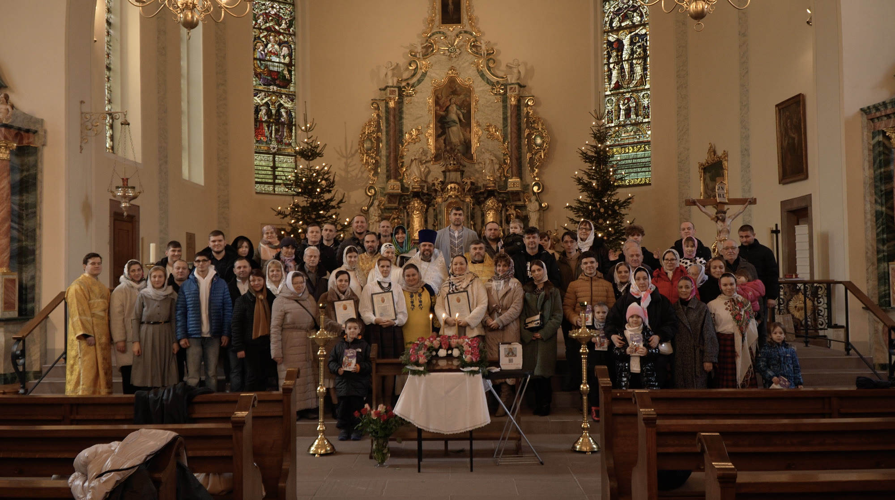
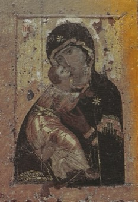
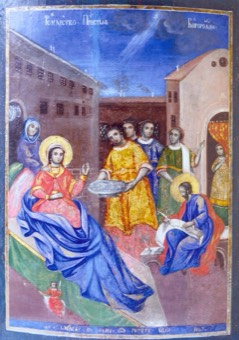
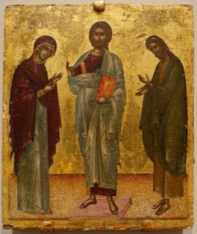
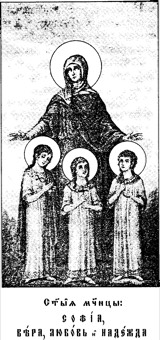
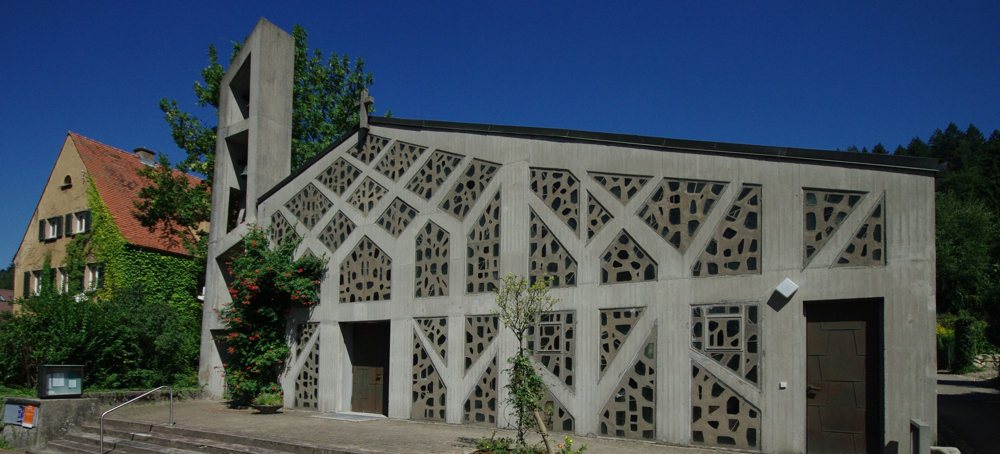

15. Sonntag nach Pfingsten
Gottesdienstplan
Wann wir feiern
Die Göttliche Liturgie beginnt um 9:30 Uhr. Unsere Gemeinde folgt dem julianischen Kalender (alter Stil): bei jedem Termin stehen das Fest, die Heiligen des Tages und bei Sonntagen der Ton. Blättern Sie mit den Pfeilen durch die Monate.
September 2026
-
13.09 · Sonntag · 9:30
15. Sonntag nach Pfingsten
Niederlegung des Gürtels der Gottesmutter · Hl. Priestermärtyrer Cyprian von Karthago
Göttliche Liturgie · Ton 6
-

20.09 · Sonntag · 9:30
16. Sonntag nach Pfingsten
Vorfest der Geburt der Gottesmutter · Hl. Märtyrer Sozon
Göttliche Liturgie · Ton 7
-

26.09 · Samstag · 17:00
Vesper am Vorabend der Kreuzerhöhung
Gedenken der Weihe der Auferstehungskirche in Jerusalem · Vorfest der Kreuzerhöhung
Vesper
-
27.09 · Sonntag · 9:30
Erhöhung des kostbaren und lebenspendenden Kreuzes
17. Sonntag nach Pfingsten · Eines der zwölf großen Feste · Strenger Fasttag
Göttliche Liturgie · Ton 8
-

30.09 · Mittwoch · 9:30
Fest der heiligen Märtyrerinnen Glaube, Hoffnung, Liebe und ihrer Mutter Sophia
Nachfeier der Kreuzerhöhung
Göttliche Liturgie
Damit Sie die Termine nicht abschreiben müssen — den ganzen Plan herunterladen die Datei öffnet sich in Google Kalender, Apple Kalender oder Outlook und trägt alle Gottesdienste ein.
Weitere Termine gibt der Priester bekannt — sobald sie feststehen, erscheinen sie hier.
Anfahrt
Wo wir feiern
- Kirche
- Matthias-Claudius-Kapelle
- Adresse
- Kybfelsenstraße 17
79100 Freiburg im Breisgau - Stadtteil
- Günterstal
- Straßenbahn
- Linie 2, Haltestelle Klosterplatz — 107 m zu Fuß
- Barrierefreiheit
- Der Eingang von der Straße ist ebenerdig,
ohne Stufen. Im Inneren, im Hausflur, gibt es Stufen.
Mit Rollstuhl oder Kinderwagen rufen Sie am besten vorher an — wir empfangen Sie und helfen.
Die Kapelle gehört uns nicht
Wir feiern in einer Kapelle, die uns zur Verfügung gestellt wird. Sie ist deshalb nur zu den genannten Gottesdienstzeiten geöffnet.
Für ein persönliches Gespräch bitte vorher Kontakt aufnehmen.

Straßenbahn 2 Richtung Günterstal, Haltestelle Klosterplatz — von dort 107 Meter zu Fuß.
Zu Gast
Zum ersten Mal in einer orthodoxen Kirche
Sie müssen nichts vorbereiten und nichts können. Kommen Sie einfach und bleiben Sie.
- Beginn um 9:30 Uhr; später dazuzukommen ist kein Problem.
- Ein Kopftuch ist bei Frauen üblich, aber keine Bedingung.
- Kinder dürfen sich bewegen und Geräusche machen.
- Gebetet wird im Stehen; einige Sitzplätze sind vorhanden.
- Fotografieren bitte zurückhaltend und nicht während der Wandlung.
Sprache der Gottesdienste
Wir feiern auf Kirchenslawisch und Ukrainisch. Die Predigt und das Gespräch nach dem Gottesdienst sind auf Ukrainisch.
Dauer
Die Liturgie dauert etwa zwei Stunden, die Vesper ist kürzer.
Gemeindeleben
Wie es bei uns aussieht
Das sind unsere eigenen Aufnahmen und unser eigener Film — keine Stockbilder. Schauen Sie hinein, bevor Sie kommen: dieselbe Kapelle, dieselben Menschen, dasselbe Licht.
-
Jugend fragt den Priester
30 Minuten · Kanal der Gemeinde · April 2025
-
Wie die UOK im Ausland lebt — ein Gespräch mit dem Priester
42 Minuten · fremder Kanal „Tetiana Zaruk“ · Januar 2024
-
Aus den ersten Gottesdiensten
1 Minute · 16. Juli 2023 · Kanal des Priesters
Das Video startet erst nach einem Klick. Bis dahin fragt die Seite bei YouTube nichts ab — die Vorschaubilder liegen bei uns. Mit dem Klick willigen Sie ein, dass YouTube (Google Ireland Limited) Ihre IP-Adresse erhält und Daten in Ihrem Browser speichern kann. Mehr dazu
Ihr Fest aufnehmen lassen
Die Bilder und der Film auf dieser Seite sind hier in der Gemeinde entstanden. Genauso lässt sich Ihr Tag festhalten — die Taufe eines Kindes, die Trauung, die erste Beichte. So ein Tag kommt einmal; die Angehörigen kommen während des Gottesdienstes ohnehin nicht zum Fotografieren.
Bitte vorher absprechen, nicht am Tag selbst: da ist der Priester im Gottesdienst. Schreiben oder rufen Sie an — wir stellen den Kontakt her und sagen Ihnen, was in der Kirche aufgenommen werden darf und was nicht.
- Taufe — das Sakrament und ein gemeinsames Bild mit der Familie danach
- Trauung — Fotos oder ein kurzer Film
- Erste Kommunion des Kindes, Namenstag, Hochzeitsjubiläum
- Panachida und Gedenkgottesdienst — zurückhaltend, ohne Blitz
Sakramente und Amtshandlungen
Klicken Sie an — es öffnet sich, wie alles abläuft, was Sie mitbringen und wie Sie einen Termin vereinbaren. Die Seite lädt dabei nicht neu.
Der Mensch wird für das Leben mit Gott geboren und Glied der Kirche.
Die Kirche segnet die Eheleute und betet, dass ihr Bund in Gott bestehe.
Ein Gespräch mit Gott im Beisein des Priesters, nach dem die Sünden vergeben werden.
Das Herz der Liturgie: die Gläubigen empfangen Leib und Blut Christi.
Gebet um Heilung von Seele und Leib mit geweihtem Öl.
Gebet für die Verstorbenen: in der Kirche, am Grab oder vor der Bestattung.
Gebet für die Lebenden: in Not, zum Beginn eines Vorhabens, zur Haussegnung.
Krankensalbung zu Hause, Fahrzeugsegnung, Erwachsenentaufe, Gedenkfeier — auch was hier nicht steht, ist möglich. Schreiben Sie dem Priester, und Sie bekommen eine konkrete Antwort. Fotos und Video des Sakraments lassen sich ebenfalls absprechen — siehe oben unter „Gemeindeleben“.
Gebetszettel
Namen zum Gebet abgeben
Tragen Sie die Namen ein — die Seite stellt daraus einen fertigen Text zusammen.
„Senden“ öffnet Ihr E-Mail-Programm mit einer fertigen Nachricht an den Priester — Sie müssen nur noch auf Absenden tippen. „Kopieren“, wenn Sie den Text lieber per Messenger schicken oder vor dem Gottesdienst abgeben. Die Seite selbst verschickt nichts.
Über uns
Unsere Gemeinde
Die Ukrainisch-orthodoxe Kirchengemeinde „Mariä Schutz und Fürbitte“ in Freiburg ist eine orthodoxe Gemeinde von Ukrainerinnen und Ukrainern. Sie bringt Gläubige zum gemeinsamen Gebet, zum Gottesdienst und zum geistlichen Leben zusammen.
Wir feiern die Göttliche Liturgie, die Kirchenfeste und die Sakramente, beten für die Lebenden und die Verstorbenen und begleiten die Menschen seelsorgerlich.
Einen besonderen Platz im Leben der Gemeinde haben die Unterstützung ukrainischer Familien, die Hilfe für Menschen, die wegen des Krieges nach Deutschland gekommen sind, und die Bewahrung der ukrainischen orthodoxen geistlichen und kulturellen Tradition. Die Gemeinde beteiligt sich an karitativen und humanitären Initiativen, hilft der Ukraine und unterstützt Menschen in Not.
Die Gemeinde besteht seit 2023. Sonntags kommen etwa 30 Menschen zusammen, an den großen Festen bis zu hundert.
Kurz gefasst
- Gegründet
- 2023
- Gottesdienstbesuch
- etwa 30 Personen sonntags,
an großen Festen bis zu 100 - Priester
- Pfarrer Volodymyr Popivchuk
- Rechtsform
- eingetragener Verein (e. V.)
- Register
- Amtsgericht Freiburg im Breisgau, VR 704262
Spenden
Die Gemeinde unterstützen
Die Gemeinde finanziert sich ausschließlich aus Spenden — für die Miete der Kapelle, den Gottesdienstbedarf und die Hilfe für Bedürftige.
Die Gemeinde ist ein eingetragener Verein und als gemeinnützig anerkannt: Das Finanzamt Freiburg-Stadt hat mit Bescheid vom 20.08.2024 nach § 60a Abs. 1 AO festgestellt, dass die Satzung die Voraussetzungen der §§ 51, 59, 60 und 61 AO erfüllt (Steuernummer 06470/22558). Auf dieser Grundlage stellen wir Zuwendungsbestätigungen aus.
Bitte geben Sie dafür bei der Überweisung Ihren vollständigen Namen und Ihre Anschrift an. Bis 300 € genügt dem Finanzamt der vereinfachte Zuwendungsnachweis — der Kontoauszug reicht (§ 50 Abs. 4 EStDV).
Bankverbindung
- Empfänger
- Ukrainische-orthodoxe Kirchengemeinde Mariä Schutz
- IBAN
- DE43 6805 0101 0014 5440 33
- Bank
- Sparkasse
Kontakt
Kontakt aufnehmen
- Priester
- Pfarrer Volodymyr Popivchuk
- Telefon
- +49 1515 6556369
- Messenger
- WhatsApp Telegram Viber
- popivcukvolodimir@gmail.com
- YouTube
- @UPCF
Wann Sie uns erreichen
Unter derselben Nummer erreichen Sie uns auch per WhatsApp, Telegram oder Viber. Während des Gottesdienstes können wir nicht ans Telefon — wir rufen zurück.
Worum es gehen darf
Taufe, Trauung, Beichte, Gebet für Verstorbene, Aufnahmen eines Sakraments — und einfach die Frage, wie ein erster Besuch abläuft.